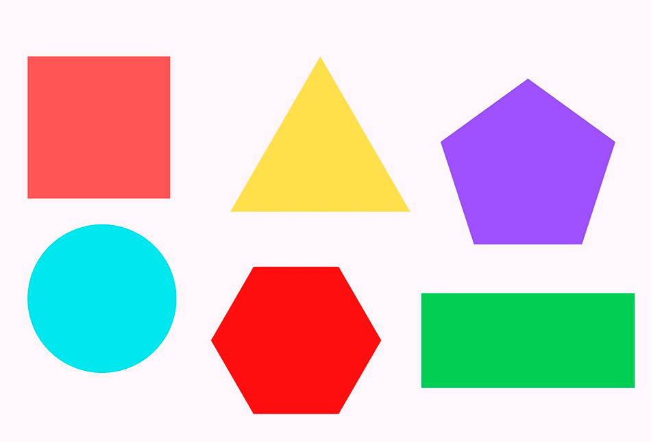

CALCULADORA GEOMETRICA
INICIO
AREA
PERIMETRO
AREAS
El área es un concepto métrico que puede permitir asignar una medida a la extensión de una superficie.
PERIMETROS

Es la suma de los lados de una figura geométrica. Es su contorno.